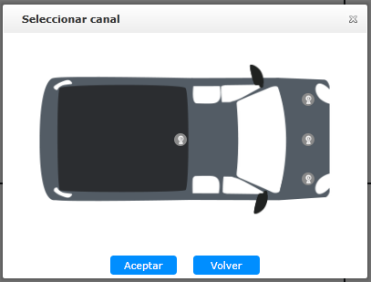
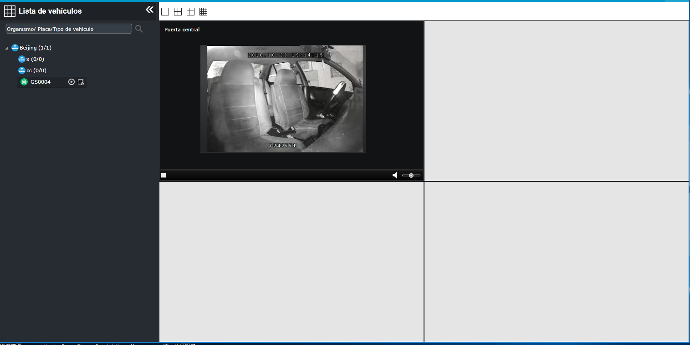

Vídeo en tiempo real
El video en tiempo real del vehículo seleccionado se reproduce con la forma de video wall, y el video en tiempo real de diferentes
vehículos se puede reproducir simultáneamente.
| 1. | Expanda la navegación de la lista de vehículos en el lado izquierdo paso a paso, busque el vehículo para ver el video, haga
clic en el lado derecho 〖 
Fig 79 Ventana de selección de vídeo histórico |
| 2. | Haga clic en una o varias cámaras que desea ver, haga clic en 〖Aceptar〗, luego el video wall reproducirá automáticamente el video en tiempo real.

Fig 80 Reproduce video en tiempo real
|
| 3. | (Opcional) Si la ventana de video actual está reproduciendo un video y luego pide un nuevo video, se abre la “Seleccionar ventana”, y el usuario puede seleccionar una ventana de las ventanas de video para reemplazar con el nuevo video bajo demanda.
En lugar de seleccionar una ventana de video alternativa, el usuario puede hace que se muestra más ventanas de video para
reproducir el video.
|
| 4. | Haga doble clic en una ventana de video para acercar a pantalla completa; haga doble clic otra vez para regresar al modo de ventana original. |
| 5. | En la ventana de video único de la ventana de reproducción de video en vivo, haga clic en el botón 〖 |